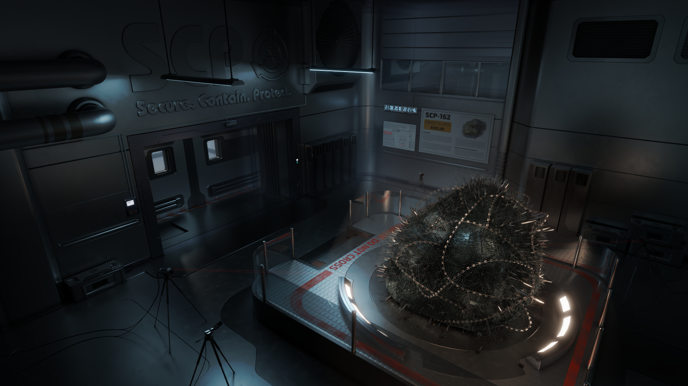

SCP-162

- Item nº:
- SCP-162
- Classe do objeto:
- Euclid
Procedimentos Especiais de Contenção:
O SCP-162 deve ser mantido o tempo todo em um recipiente de aço selado. Todo manuseio deve ser feito com luvas grossas de chapa de aço e colete balístico pesado. Qualquer funcionário que tente tocar o SCP-162 sem a proteção adequada, ou que aja de forma errática ou sem responder, deve ser imediatamente retirado da área de contenção. Todo o pessoal deve se submeter a testes mentais e avaliação por duas semanas após a interação com o SCP-162.
Descrição:
O SCP-162 é uma massa de anzóis, linha de pesca, agulhas, tesouras e outros objetos cortantes, em formato aproximado de bola, com cerca de 2,4 m (8 pés) de largura e 2,1 m (7 pés) de altura. Depois de ficarem nas proximidades do SCP-162, os sujeitos relataram sentir-se atraídos pelo objeto, com vontade de tocá-lo. Esse desejo pode durar várias semanas depois de ver o item, tornando-se uma obsessão em muitos casos. A "atração" aumenta quanto mais o SCP-162 é observado, e os sujeitos se tornam violentos contra qualquer pessoa que tente contê-los ou afastá-los do SCP-162.
Tocar o SCP-162 resulta imediatamente em vários anzóis cravados na pele do sujeito. A experiência é extremamente dolorosa, muito mais do que com anzóis comuns. Debater-se ou tentar escapar prende ainda mais o sujeito, provavelmente resultando em seu aprisionamento completo na superfície do SCP-162. O sujeito sangra profusamente, o que resulta em morte após um período prolongado. Sujeitos cuja pele é impenetrável aos anzóis do SCP-162, como o SCP-1063, mostraram-se imunes aos efeitos de compulsão do SCP-162.
Tentar remover um sujeito do SCP-162 resulta no aprisionamento de quem tenta remover, ou em graves danos corporais à carne do sujeito. Muitas vezes os sujeitos "alternam" entre expressar dor extrema e pedir ajuda e declarações de prazer e pedidos para serem deixados em paz, chegando a tentar agarrar e prender o pessoal que tenta resgatá-los. A ativação do SCP-1114 nas proximidades do SCP-162 mostrou-se um meio eficaz de libertar um sujeito do aprisionamento, embora o efeito de compulsão do SCP-162 continue.